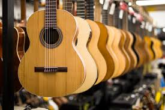

The Acoustic Guitar
Acoustic guitars form several notable subcategories within the acoustic guitar group: classical and flamenco guitars; steel-string guitars, which include the flat-topped, or "folk", guitar; twelve-string guitars; and the arched-top guitar.
The acoustic guitar group also includes unamplified guitars designed to play in different registers, such as the acoustic bass guitar, which has a similar tuning to that of the electric bass guitar.